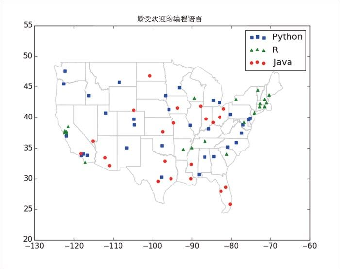
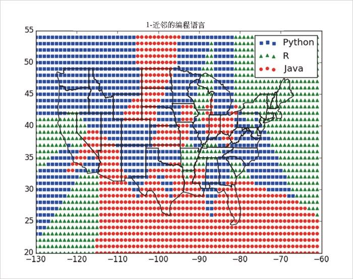
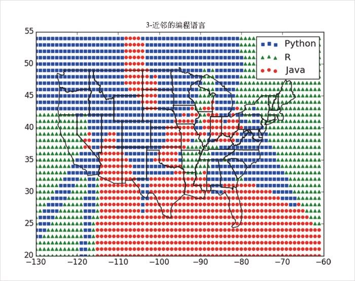
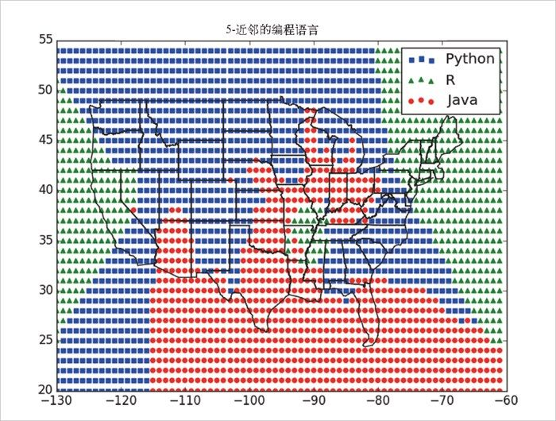

12.2 案例：最喜欢的编程语言
DataSciencester 第一次用户调查的结果回来了，我们从中找到了一系列大城市用户偏爱的编程语言：
# 每一条记录都是([longitude, latitude], favorite_language)的形式
cities = [([-122.3 , 47.53], "Python"), # 西雅图
([-96.85, 32.85], "Java"), # 奥斯汀
([ -89.33, 43.13], "R"), # 麦迪逊
# ……还有很多记录
]
社区参与部门的副总想知道我们能不能用这些结果来预测那些我们没有调查到的地方最喜欢的编程语言是什么。
一如既往地，第一步最好是先根据数据作图（如图 12-1 所示）：
# 键是语言，值是成对数据(longitudes, latitudes)
plots = { "Java" : ([], []), "Python" : ([], []), "R" : ([], []) }
# 我们希望每种语言都能有不同的记号和颜色
markers = { "Java" : "o", "Python" : "s", "R" : "^" }
colors = { "Java" : "r", "Python" : "b", "R" : "g" }
for (longitude, latitude), language in cities:
plots[language][0].append(longitude)
plots[language][1].append(latitude)
# 对每种语言创建一个散点序列
for language, (x, y) in plots.iteritems():
plt.scatter(x, y, color=colors[language], marker=markers[language],
label=language, zorder=10)
plot_state_borders(plt) # 假设我们有一个实现这一步的函数
plt.legend(loc=0) # 让matplotlib选择一个位置
plt.axis([-130,-60,20,55]) # 设置轴
plt.title("最受欢迎的编程语言")
plt.show()

图 12-1：最受欢迎的编程语言
你可能注意到了对 plot_state_borders() 的调用，这是一个没有被精确定义的函数。本书的 GitHub 页面（https://github.com/joelgrus/data-science-from-scratch ）上有这个函数的具体实现，你也可以把它当作一个练习题来自己尝试解决：
(1) 在网络上搜索各州边界线的经纬度等信息；
(2) 把你找到的任意经纬度数据转化为线段 [(long1, lat1), (long2, lat2)] 的列表；
(3) 使用 plt.plot() 画出这些线段。
既然互相邻近的地区看起来偏爱相同的语言，那么 k 近邻法作为一种预测模型看上去会是一种合理的选择。
首先，让我们看一下如果尝试利用邻居城市来预测每个城市偏爱的语言会得到什么结果：
# 试试多个不同的k值
for k in [1, 3, 5, 7]:
num_correct = 0
for city in cities:
location, actual_language = city
other_cities = [other_city
for other_city in cities
if other_city != city]
predicted_language = knn_classify(k, other_cities, location)
if predicted_language == actual_language:
num_correct += 1
print k, "neighbor[s]:", num_correct, "correct out of", len(cities)
看起来 3- 近邻的表现最好，59% 的时间都能给出正确结果：
1 neighbor[s]: 40 correct out of 75
3 neighbor[s]: 44 correct out of 75
5 neighbor[s]: 41 correct out of 75
7 neighbor[s]: 35 correct out of 75
现在可以看出在每个最近邻体系下会把某个区域分类到哪种语言。我们可以在全部的网格点上进行这种分类，然后参照处理城市分类的方法把预测结果画出来：
plots = { "Java" : ([], []), "Python" : ([], []), "R" : ([], []) }
k = 1 # 或3，或5，或……
for longitude in range(-130, -60):
for latitude in range(20, 55):
predicted_language = knn_classify(k, cities, [longitude, latitude])
plots[predicted_language][0].append(longitude)
plots[predicted_language][1].append(latitude)
例如，图 12-2 显示了当我们只看最近的邻居（k =1）时会有什么结果。

图 12-2：1- 近邻的编程语言
可以看到，从一种语言到另一种语言有许多骤变，它们之间的边界也较为锐化。当我们把邻居数增加到 3 时，能看到各种语言的区域变光滑了（图 12-3）。

图 12-3：3- 近邻的编程语言
我们把邻居数增加到 5，边界变得更加光滑了（图 12-4）。

图 12-4：5- 近邻的编程语言
在这里，维度是大致可比较的，如果不是这样，你可能需要重新调整数据，就像我们在 10.4 节“数据调整”中所讲的那样。